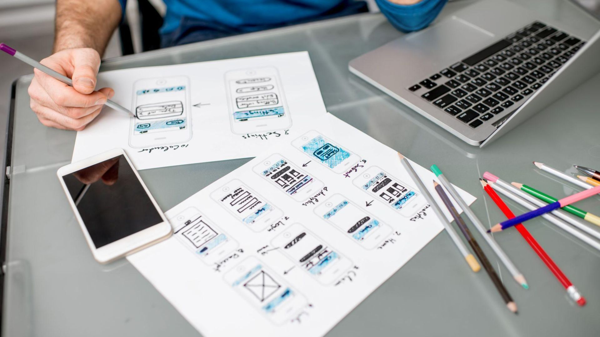

Über DK Software Studio
Ein kleines Studio aus Hof für einfache Websites, lokale Web-Projekte und funktionale Apps.
Direkt betreut, verständlich aufgebaut und ohne unnötige Agentur-Komplexität.

DK Software Studio
Ich lebe in Hof (Saale) und entwickle digitale Lösungen mit klarem Fokus: einfach, verständlich und im Alltag nutzbar.
Mein Ansatz ist bewusst schlank. Keine große Agentur, keine unnötigen Prozesse, keine komplizierten Begriffe. Sie sprechen direkt mit mir — von der ersten Idee bis zur fertigen Lösung.
Neben eigenen Android-Apps entstehen bei DK Software Studio auch lokale Web-Projekte, zum Beispiel regionale Plattformen für Reinigung, Gartenservice und Handwerker in Hof.
Mein Weg
Aus eigenen App-Ideen wurde nach und nach ein kleines Studio für praktische digitale Projekte — mit Fokus auf Klarheit, Funktion und ruhige Umsetzung.
01 · Eigene Apps
Kleine Werkzeuge mit ruhigem Design, klarer Bedienung und echtem Nutzen im Alltag.
02 · Lokale Projekte
Verständliche Seiten, einfache Formulare und direkte Kontakte für Hof und Umgebung.
03 · Heute
Websites, Landingpages und kleine Apps, die nicht überladen wirken, sondern schnell verstanden werden.

Arbeitsweise
Ich arbeite bewusst ohne große Agenturstruktur. Das bedeutet: kurze Wege, direkte Abstimmung und klare Entscheidungen.
Mir ist wichtig, dass eine Website oder App nicht nur modern aussieht, sondern im Alltag wirklich verstanden und genutzt wird.
Egal ob kleine Website, lokale Plattform oder einfache App-Idee — ich gebe eine ehrliche Einschätzung und denke pragmatisch statt kompliziert.